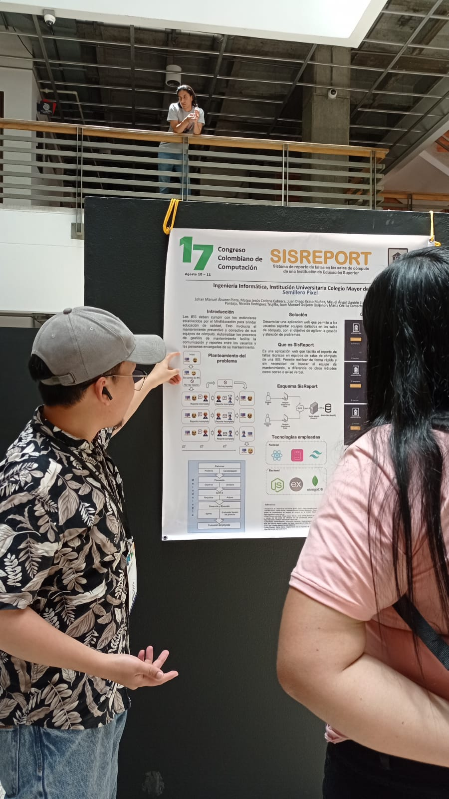
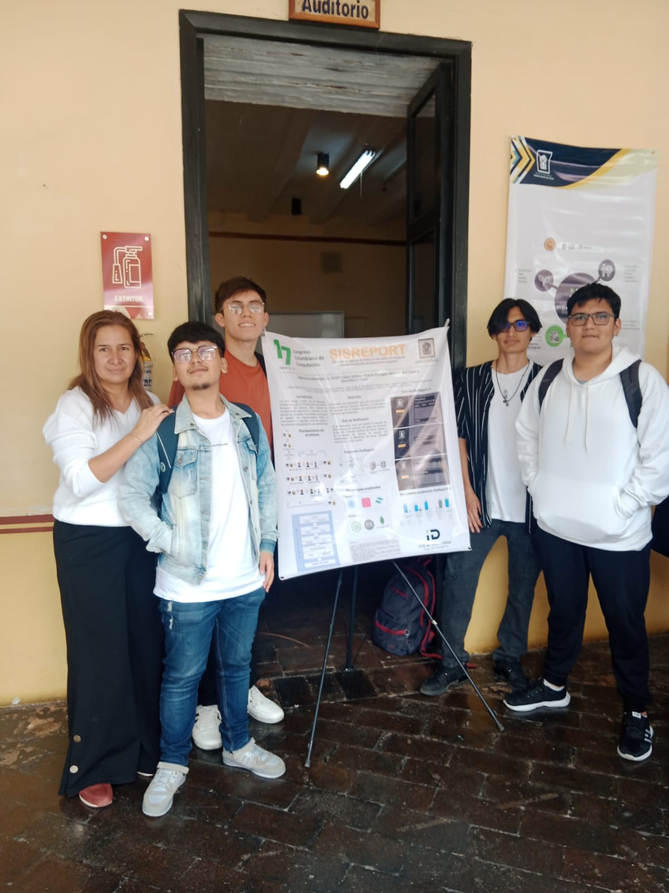
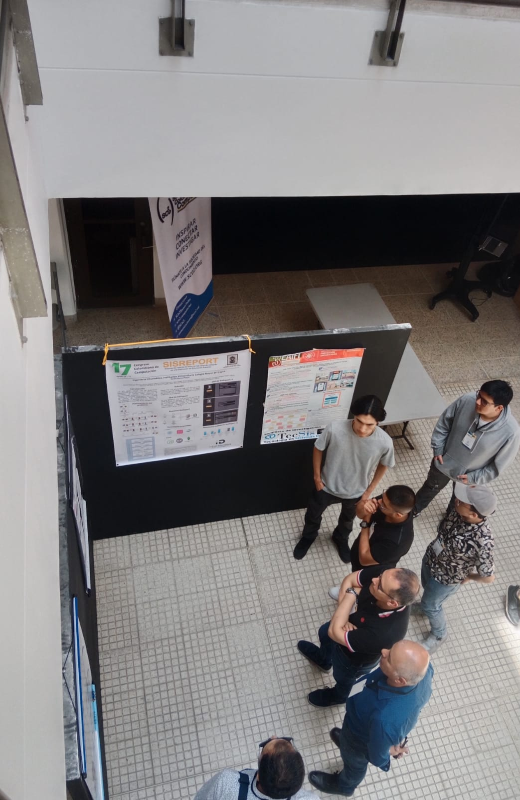

Acerca de mí

Soy un estudiante de ingeniería informática apasionado por la tecnología y los datos. Estoy familiarizándome con metodologías ágiles y formo parte de un semillero de investigación enfocado en desarrollo web utilizando HTML, CSS y JavaScript, donde aplico buenas prácticas.
He tenido la oportunidad de participar en algunos proyectos relacionados con tecnologías web, requisitos de software y calidad de producto para aplicaciones software. Mi formación incluye conocimientos en resolución de problemas, gestión del tiempo y habilidades que adquirí durante mis estudios.
Me motiva aprender y estar al día en las últimas tendencias tecnológicas, especialmente en el área del desarrollo web y la ciberseguridad. Disfruto compartir lo que aprendo mediante actividades de divulgación cuando tengo la oportunidad. En general, soy un estudiante entusiasta buscando desarrollarme profesionalmente en el área de la informática y las tecnologías web.
Como parte de mi compromiso con el aprendizaje continuo, estoy explorando nuevas tecnologías emergentes y participando en cursos en línea y eventos relacionados con la informática y la tecnología. Mi objetivo es convertirme en un profesional altamente capacitado y contribuir al avance de la industria tecnológica.
Habilidades
OSs
LinuxPrincipiante
WindowsIntermedio
macOSPrincipiante
Codificacion
PythonIntermedio
JavaPrincipiante
SQLPrincipiante
HTML5Intermedio
JavaScriptPrincipiante
Control de versiones
GitPrincipiante
AzureAdvanced
AWSPrincipiante
Idiomas
EspañolLengua Materna
InglesIntermedio
Educación
Estudiante de Ing.Informatica
2021-2024
Universidad Colegio Mayor del CaucaPopayan, Cauca
Tecnico en Sistemas
2018 - 2020
SENASan Francisco, Putumayo
Bachiller Academico
2020
Institucion Educativa Almirante PadillaSan Francisco, Putumayo
Experiencia Profesional
Ponencia de Proyecto en Universidad Eafit
Sociedad Colombiana de Computación Medellin,Colombia
Ultima Version
-
Este es un proyecto para estudiantes y profesores de una IES, que se enfrentan a problemas técnicos
en los equipos de las salas de la institución. El producto SisReport es un sistema web que facilita
el reporte de fallas que busca mejorar la eficiencia y rapidez en la atención a solicitudes de
mantenimiento de equipos de las salas de cómputo.
Ponencia de Proyecto en Universidad Antonio Camacho
Cali
Segunda Version
-
Este es un proyecto para estudiantes y profesores de una IES, que se enfrentan a problemas técnicos
en los equipos de las salas de la institución. El producto SisReport es un sistema web que facilita
el reporte de fallas que busca mejorar la eficiencia y rapidez en la atención a solicitudes de
mantenimiento de equipos de las salas de cómputo.
Ponencia de Proyecto en Universidad Unimayor
Popayan
Primera Version
-
Este es un proyecto para estudiantes y profesores de una IES, que se enfrentan a problemas técnicos
en los equipos de las salas de la institución. El producto SisReport es un sistema web que facilita
el reporte de fallas que busca mejorar la eficiencia y rapidez en la atención a solicitudes de
mantenimiento de equipos de las salas de cómputo.
Proyectos
Intereses

1.Desarrollo Web Creación de sitios web y aplicaciones web utilizando tecnologías como HTML, CSS y JavaScript para mejorar la experiencia del usuario y satisfacer las necesidades del negocio.
2.Ciberseguridad Protección de sistemas, redes y datos contra ataques cibernéticos mediante la implementación de medidas de seguridad, detección de vulnerabilidades y respuesta a incidentes.
3.Inteligencia Artificial Simulación de procesos inteligentes mediante sistemas informáticos para realizar tareas que normalmente requieren inteligencia humana, como el reconocimiento de patrones, la toma de decisiones y la resolución de problemas.
Metas y Expectativas

1.Obtener experiencia práctica a través de pasantías o proyectos de la vida real Buscar oportunidades de pasantías o prácticas profesionales en empresas o instituciones relacionadas con la informática.
2.Dominar los fundamentos de la programación y las estructuras de datos Aprender a implementar y manipular estructuras de datos fundamentales (arrays, listas, árboles, etc.).
3.Desarrollar habilidades de comunicación efectiva y trabajo en equipo Mejorar tus habilidades de comunicación escrita y oral para presentar ideas de manera clara y concisa.
Contacto
Ubicacion:
Popayan, Cauca
Correo:
mcadena@unimayor.edu.co
Celular:
+57 3223528128